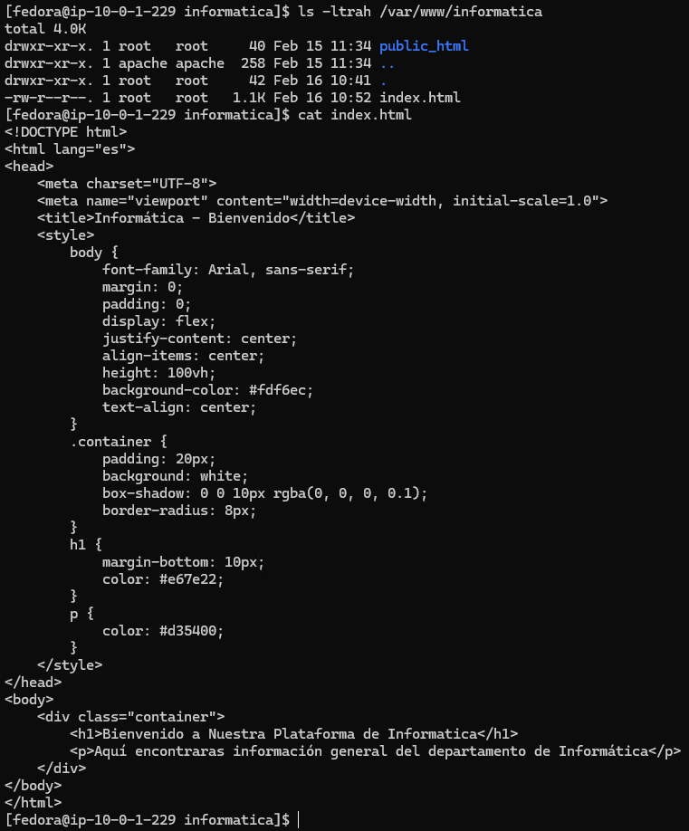
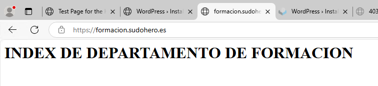

Creación virtual host de empresa y ventas y certificación con Let's Encrypt
Creamos los directorios de empresa y ventas.

Creamos el index de empresa.

Creamos el index de ventas.

Mostramos la configuración que le hemos dado a empresa para que se pueda acceder por http.

Mostramos la configuración que le hemos dado a ventas para que se pueda acceder por http. y por https firmado por Let's encrypt.

Certificamos con Let's Encrypt formacion.sudohero.es

Ahora si a través del navegador entramos a ventas podemos ver como es la web.

Este es el certificado de Let's Encrypt que esta usando ventas para funcionar con TLS/SSL.

Empresa no esta certificado, por lo que se accede por el puerto 80.

Creación de Virtual Host para informática y formación.
Lo primero que debemos hacer es crear el primer fichero de nuestra web.
Creamos el directorio /var/www/informatica y alli el index.html y le damos contenido.

Como vamos a tener dos virtual host creamos también el directorio /var/www/formacion y su propio index.html. Le damos contenido.

Ahora que ya tenemos algo que mostrar, en el directorio donde almacenamos los ficheros de configuración de Apache, creamos el fichero de configuración tanto de informática como de formación.
Necesitamos que ambos ficheros tengan las directivas adecuadas a lo que queremos para nuestros virtual hosts.
Es importante definir en que puerto escucha, el nombre que sirve, el fichero que va a mostrar y la localización de los ficheros de configuración.

Como vamos a cambiar la ruta de los logs de errores y acceso, necesitamos crearlos.

Esto es el contenido de informatica_error_log.

Esto es el contenido de informatica_access_log.

Esto es el contenido de formacion_error_log.

Esto es el contenido de formacion_access_log.

Ahora ya podemos comprobar que son accesibles desde un navegador.
Esta es la web del departamento de informática.

Y esta es la web del departamento de formación.

Implementar TLS/SSL al virtual host de formación.
Una vez hemos creado nuestro virtual host de formación vamos a hacer que funcione con HTTPS.
Para ello necesitamos crear un archivo .pem y un archivo .key.
El archivo .key lo generamos con el comando openssl genrsa -out /etc/ssl/private/seguro.key 2048.

El archivo .pem lo generamos con el comando openssl req -new -key /etc/ssl/private/seguro.key -x509 -days 365 -out /etc/ssl/certs/seguro.pem.

Una vez tenemos ambos archivos hay que cambiar la configuración del virtual host de formación.
Necesitamos que escuche por el puerto 443 y especificarle las rutas de los ficheros .pem y .key.

Ahora si accedemos a formación podremos ver que funciona con TLS/SSL.

Este es el certificado.